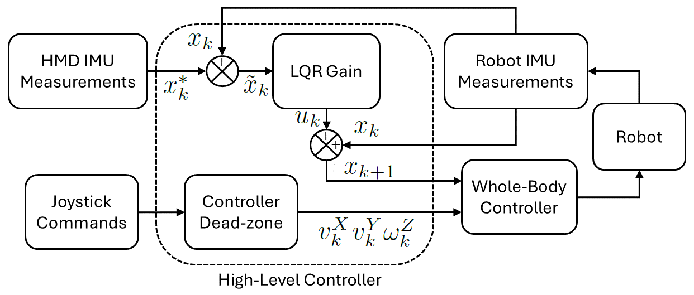
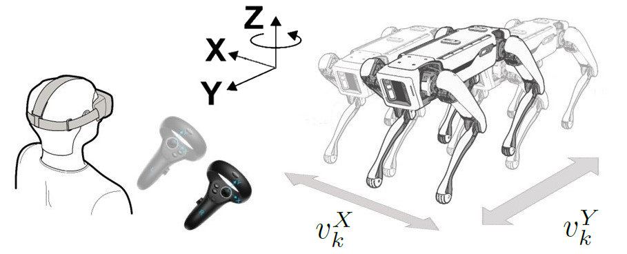
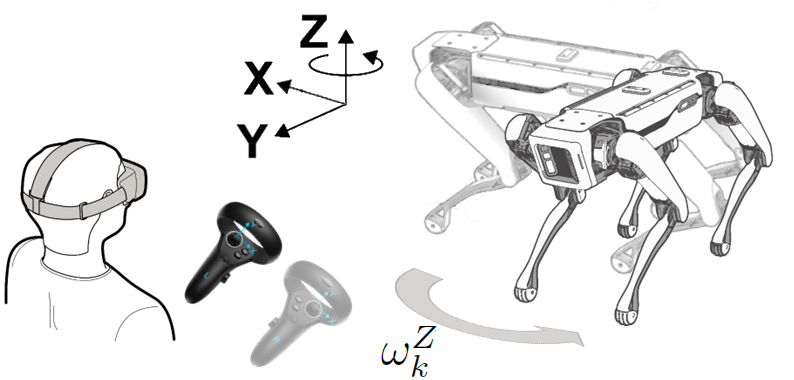

High-level controller
Spot’s whole-body controller is treated as a black box. The high-level layer only commands torso pitch/yaw and heading-frame velocities.
{kind=link}

Block diagram of the control system. HMD and robot IMU measurements feed an LQR; joystick commands pass through a dead-zone policy. Both outputs go to the same whole-body controller.
Torso-orientation task (2 DoF)
The task tracks the pitch and yaw of the robot body-fixed frame at step \(k\),
using the HMD IMU angles \(\phi_k^{\mathrm{HMD}}\) and \(\psi_k^{\mathrm{HMD}}\) as references. Roll is ignored.
Because the low-level controller is a black box, the simplified discrete-time model is the integrator
with \(A = B = I^{2\times 2}\), state
and \(u_k \in \mathbb{R}^{2}\). Pitch in the HMD frame has the opposite sign, so the desired state is
The tracking error is \(\tilde{x}_k = x_k - x_k^{\ast}\).
LQR
An infinite-horizon discrete LQR minimises
with \(Q, R \in \mathbb{R}^{2\times 2}\). In the implementation
(spot_controller.py)
and the sample time is \(t_{\mathrm{step}} = 0.05\,\mathrm{s}\). The control law is \(u_k = K \tilde{x}_k\) with
where \(P \succ 0\) solves the discrete algebraic Riccati equation
The LQR object is built with do_mpc.controller.LQR on a
do_mpc.model.LinearModel whose right-hand side is
\(x^{+} = x + u\).
Saturation
Before commands reach the whole-body controller they are clipped to joint-safe limits:
In code the constants are MAX_PITCH = MAX_YAW = 0.5 rad
(spot_interface.py).
Locomotion task (3 DoF)
{kind=link}

Linear velocity components \(v_k^{X}\), \(v_k^{Y}\) in the heading frame.
{kind=link}

Rotational velocity \(\omega_k^{Z}\) about the vertical axis of the heading frame.
Thumbstick mapping (Controller.get_touch_controls):
If the right stick axis exceeds the dead zone
INPUT_TRESHOLD = 0.5, a saturated value+/- VELOCITY_BASE_SPEED(0.5 m/s) is assigned to \(v^{X}\) or \(v^{Y}\).The left stick is mapped the same way onto \(\omega^{Z}\) with
VELOCITY_BASE_ANGULAR = 0.5rad/s.
Commands last VELOCITY_CMD_DURATION = 0.6 s on the SDK side so a
dropped packet does not leave the robot walking indefinitely.
Parallel execution
The two tasks run in the same control loop:
hmd_inputs = self.inputs[0:3]
self.controller.get_setpoints(hmd_inputs)
touch_inputs = self.inputs[3:6]
spot_measures = self.interface.get_body_orientation()
hmd_controls = self.controller.get_hmd_controls(spot_measures)
touch_controls = self.controller.get_touch_controls(touch_inputs)
controls = hmd_controls + touch_controls
self.interface.set_controls(controls)
The robot can therefore walk while the operator looks around, with torso orientation independent of walking direction.